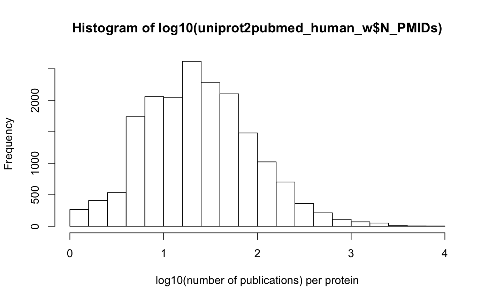
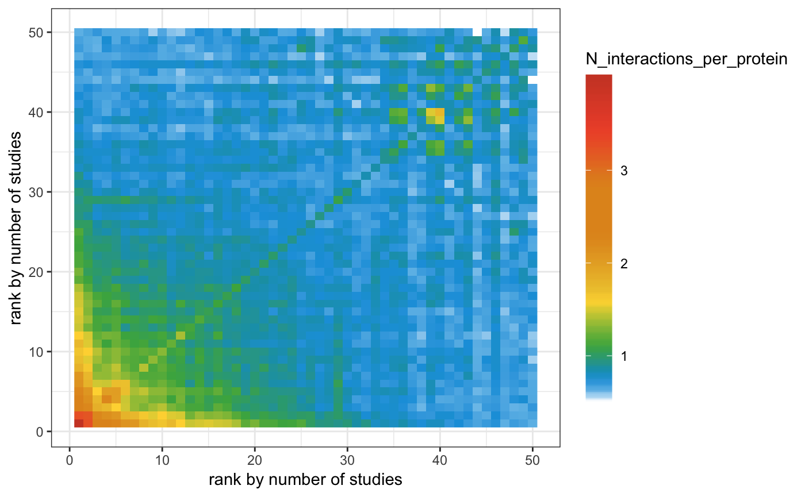
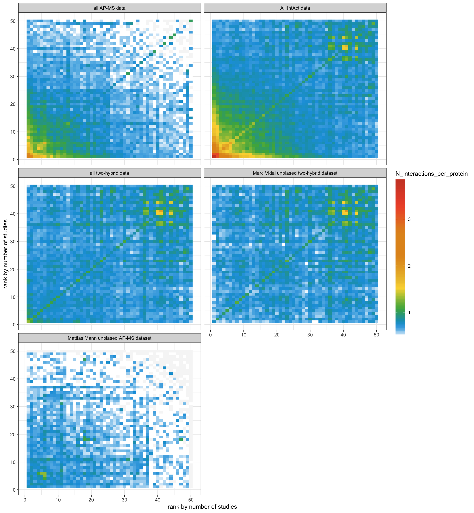

study_bias_doc.RmdThis article and accompanying slides cover fundamentals of working with PPI data and the problem of study bias in protein interactions networks.
This workshop covers the following topics:
0. Brief intro into R Markdown
1. The fundamentals of protein-protein interactions (PPI) and networks (lecture)
2. Getting PPI data into R (from IntAct, using PSICQUIC)
3. Finding publication (Pubmed) IDs for every protein
4. Why should you care about the study bias in your network and how to evaluate it
Learn more:
http://rmarkdown.rstudio.com/
Cheat sheet:
https://www.rstudio.com/wp-content/uploads/2015/02/rmarkdown-cheatsheet.pdf
Online course on Reproducible data analysis: https://www.coursera.org/learn/reproducible-research/lecture/5NzHN/r-markdown
Slides:
https://github.com/vitkl/PPI_biases_workshop/blob/master/PPI_networks_and_study_bias.pptx
The PowerPoint presentation for this lecture can be found in the project folder (PPI_networks_and_study_bias.pptx).
You can download protein-protein interaction data directly from IntAct or using PSICQUIC and PSICQUIC client implemented in PSICQUIC R package. Both ways are implemented in PItools package. Downloading data from IntAct gets you all data from all IMEx consortium databases. PSICQUIC route allows to query non-IMEx databases and construct complex search queries.
As implemented in PItools, PSICQUIC route is slow to download (limit of 2500 interactions per second to lower the load on servers). IntAct route is faster but requires memory intensive processing locally (3 GB table).
First, let’s focus on the IntAct route. Later we will download molecular interactions from a large non-IMEx database called BioGRID.
By species search is taxonomy-hierarchy aware.
# find the date of the latest locally available release
human = fullInteractome(taxid = 9606, database = "IntActFTP", # 9606 - human taxid
clean = TRUE,
protein_only = TRUE,
directory = "./data_files/", # NULL to keep data files inside R library - default
releaseORdate = NULL) # useful to keep track of the release date e.g. 2019Mar23, but for the first download set to NULL ## ... looking for the date of the latest IntAct release ...
## ... looking for the date of the latest IntAct release ...## ... loading local copy ...## Warning in fread(file_name, header = T, stringsAsFactors = F): Found
## and resolved improper quoting out-of-sample. First healed line 25383:
## <<uniprotkb:P16054 uniprotkb:Q05769 intact:EBI-298451 intact:EBI-298933|
## uniprotkb:Q543K3 psi-mi:kpce_mouse(display_long)|uniprotkb:Prkce(gene
## name)|psi-mi:Prkce(display_short)|uniprotkb:Pkce(gene name synonym)|
## uniprotkb:Pkcea(gene name synonym)|uniprotkb:nPKC-epsilon(gene name
## synonym) psi-mi:pgh2_mouse(display_long)|uniprotkb:Ptgs2(gene name)|
## psi-mi:Ptgs2(display_short)|uniprotkb:Cox-2(gene name synonym)|
## uniprotkb:Cox2(gene name synonym)|uniprotkb:Pghs-b(gene name synonym)|
## uniprotkb:Tis10(gene na>>. If the fields are not quoted (e.g. field
## separator does not appear within any field), try quote="" to avoid this
## warning.# filter for viral-mouse interaction
human_mouse = interSpeciesInteractome(taxid1 = 9606, taxid2 = 10090,
database = "IntActFTP", MITABdata = IntAct,
clean = TRUE, protein_only = TRUE,
directory = "./data_files/",
releaseORdate = "2019Mar23")
# save RData file to save time processing this data if you want to proceed to later sections immediately
rm(IntAct)
save(list = ls(), file = "./RData_steps/study_bias_doc_1.RData")You can find out any other taxid if you know species name using UniProt taxonomy search: https://www.uniprot.org/taxonomy/
# load previosly saved RData
load("./RData_steps/study_bias_doc_1.RData")
uniqueNinteractions(human)## [1] 196473uniqueNinteractors(human)## [1] 21521uniqueNinteractions(human_viral)## [1] 15003uniqueNinteractors(human_viral)## [1] 5538uniqueNinteractions(human_mouse)## [1] 24960uniqueNinteractors(human_mouse)## [1] 10114# how many of these proteins are human?
uniqueNinteractors(human_mouse, taxid = 9606)## [1] 7060# subset two-hybrid interactions
human_two_hybrid = subsetMITABbyMethod(MITABdata = human,
Interaction_detection_methods = "MI:0018")## loading local copy of MI ontologyuniqueNinteractions(human_two_hybrid)## [1] 83919uniqueNinteractors(human_two_hybrid)## [1] 14396# subset all interactions but two-hybrid
human_NOT_two_hybrid = subsetMITABbyMethod(MITABdata = human,
Interaction_detection_methods = "MI:0018", inverse_filter = T)## loading local copy of MI ontologyuniqueNinteractions(human_NOT_two_hybrid)## [1] 116651uniqueNinteractors(human_NOT_two_hybrid)## [1] 16616# subset affinity purification - mass spectrometry interactions
human_AP_MS = subsetMITABbyMethod(MITABdata = human,
Interaction_detection_methods = "MI:0004", Identification_method = "MI:0433")## loading local copy of MI ontologyuniqueNinteractions(human_AP_MS)## [1] 69044uniqueNinteractors(human_AP_MS)## [1] 12465# subset both published and unpublished Vidal group data
Vidal_all = subsetMITABbyPMIDs(MITABdata = human,
PMIDs = c("25416956", "unassigned1304"))
uniqueNinteractions(Vidal_all)## [1] 59037uniqueNinteractors(Vidal_all)## [1] 9756# subset Mattias Mann 2015 paper data
Mann = subsetMITABbyPMIDs(MITABdata = human,
PMIDs = "26496610")
uniqueNinteractions(Mann)## [1] 15589uniqueNinteractors(Mann)## [1] 4950You can get help and more details on these functions (for example, how to find which molecular ontology terms correspond to which methods): ?subsetMITABbyMethod
mediator_complex_proteins = fread("http://www.uniprot.org/uniprot/?query=GO:0016592%20AND%20taxonomy:9606&format=tab&columns=id")
mediator_complex = subsetMITABbyID(Vidal_all,
ID_seed = mediator_complex_proteins$Entry,
within_seed = T, only_seed2nonseed = F)
uniqueNinteractions(mediator_complex)## [1] 5uniqueNinteractors(mediator_complex)## [1] 7mediator_complex_interactions = subsetMITABbyID(Vidal_all,
ID_seed = mediator_complex_proteins$Entry,
within_seed = F, only_seed2nonseed = T)
uniqueNinteractions(mediator_complex_interactions)## [1] 179uniqueNinteractors(mediator_complex_interactions)## [1] 179Let’s retrieve all human-viral interactions from BioGrid database. But first we need to find correct database names.
client = PSICQUIC()
providers(client)## [1] "BioGrid" "bhf-ucl" "ChEMBL"
## [4] "HPIDb" "InnateDB" "InnateDB-All"
## [7] "IntAct" "IMEx" "mentha"
## [10] "MPIDB" "iRefIndex" "MatrixDB"
## [13] "MINT" "Reactome" "Reactome-FIs"
## [16] "EBI-GOA-miRNA" "UniProt" "MBInfo"
## [19] "VirHostNet" "BAR" "EBI-GOA-nonIntAct"
## [22] "ZINC"# Don't run
human_viral_BioGrid = interSpeciesInteractome(taxid1 = 9606, taxid2 = 10239,
database = "BioGrid",
clean = TRUE, protein_only = TRUE,
directory = "./data_files/")
human_BioGrid = fullInteractome(taxid = 9606, database = "BioGrid", # 9606 - human taxid
clean = TRUE,
protein_only = TRUE,
directory = "./data_files/")This can be useful in you need interactions for a small number of proteins or if you want to query non-IMEx databases. Note that queryPSICQUIC doesn’t keep track of database version data, while queryPSICQUICrlib does.
# Query for interactions of bacterial RNA polymerase sigma factor SigA identified using two-hybrid methods in all imex databases
queryPSICQUIC(query = "id:P74565 AND detmethod:\"MI:0018\"",
format = "tab27",
database = "imex",
file = "./data_files/P74565_2H_interactions_imex_tab27.tsv")## Warning in if (N_interactions > 0) {: the condition has length > 1 and only
## the first element will be used## Warning in N_SPECIES_ID_interactome[indices] <- N_interactions: number of
## items to replace is not a multiple of replacement length## query
## 1: id:P74565 AND detmethod:%22MI:0018%22
## 2: id:P74565 AND detmethod:%22MI:0018%22
## 3: id:P74565 AND detmethod:%22MI:0018%22
## 4: id:P74565 AND detmethod:%22MI:0018%22
## 5: id:P74565 AND detmethod:%22MI:0018%22
## 6: id:P74565 AND detmethod:%22MI:0018%22
## 7: id:P74565 AND detmethod:%22MI:0018%22
## 8: id:P74565 AND detmethod:%22MI:0018%22
## 9: id:P74565 AND detmethod:%22MI:0018%22
## 10: id:P74565 AND detmethod:%22MI:0018%22
## 11: id:P74565 AND detmethod:%22MI:0018%22
## file format
## 1: ./data_files/P74565_2H_interactions_imex_tab27.tsv tab27
## 2: ./data_files/P74565_2H_interactions_imex_tab27.tsv tab27
## 3: ./data_files/P74565_2H_interactions_imex_tab27.tsv tab27
## 4: ./data_files/P74565_2H_interactions_imex_tab27.tsv tab27
## 5: ./data_files/P74565_2H_interactions_imex_tab27.tsv tab27
## 6: ./data_files/P74565_2H_interactions_imex_tab27.tsv tab27
## 7: ./data_files/P74565_2H_interactions_imex_tab27.tsv tab27
## 8: ./data_files/P74565_2H_interactions_imex_tab27.tsv tab27
## 9: ./data_files/P74565_2H_interactions_imex_tab27.tsv tab27
## 10: ./data_files/P74565_2H_interactions_imex_tab27.tsv tab27
## 11: ./data_files/P74565_2H_interactions_imex_tab27.tsv tab27
## all.databases n.interactions.in.database database.not.active
## 1: IntAct 44
## 2: MINT 0
## 3: bhf-ucl 0
## 4: MPIDB 0
## 5: MatrixDB <html>
## 6: HPIDb 0
## 7: I2D-IMEx I2D-IMEx
## 8: InnateDB-IMEx InnateDB-IMEx
## 9: MolCon MolCon
## 10: UniProt 0
## 11: MBInfo 0# Query for interactions of sigma factor SigA identified using two-hybrid methods in mentha (a database that aggregates data from all primary databases, but does no interaction predition)
queryPSICQUIC(query = "id:P74565 AND detmethod:\"MI:0018\"",
format = "tab25",
database = "mentha",
file = "./data_files/P74565_2H_interactions_mentha_tab25.tsv")## query
## 1: id:P74565 AND detmethod:%22MI:0018%22
## file format
## 1: ./data_files/P74565_2H_interactions_mentha_tab25.tsv tab25
## all.databases n.interactions.in.database database.not.active
## 1: mentha 44# Query for interactions of sigma factor SigA in mentha
queryPSICQUIC(query = "id:P74565",
format = "tab25",
database = "mentha",
file = "./data_files/P74565_2H_interactions_mentha_tab25.tsv")## query file format
## 1: id:P74565 ./data_files/P74565_2H_interactions_mentha_tab25.tsv tab25
## all.databases n.interactions.in.database database.not.active
## 1: mentha 44# Retrieve interaction of any proteins encoded by Beta-adrenergic receptor kinase 1 gene (Entrez GeneID 156) from BioGRID (which recognises only this type of ID)
queryPSICQUIC(query = "id:156",
format = "tab25",
database = "BioGrid",
file = "./data_files/entrezgene156_interactions_BioGrid_tab25.tsv")## query file format
## 1: id:156 ./data_files/entrezgene156_interactions_BioGrid_tab25.tsv tab25
## all.databases n.interactions.in.database database.not.active
## 1: BioGrid 82# The function return the report of how many interaction were found in each database, not the data itself. Reading data into R.
fread("./data_files/entrezgene156_interactions_BioGrid_tab25.tsv", header = T, stringsAsFactors = F)[1:5]## V1 V2
## 1: entrez gene/locuslink:156 entrez gene/locuslink:5579
## 2: entrez gene/locuslink:156 entrez gene/locuslink:5148
## 3: entrez gene/locuslink:156 entrez gene/locuslink:6714
## 4: entrez gene/locuslink:6714 entrez gene/locuslink:156
## 5: entrez gene/locuslink:5148 entrez gene/locuslink:156
## V3
## 1: biogrid:106665|entrez gene/locuslink:ADRBK1
## 2: biogrid:106665|entrez gene/locuslink:ADRBK1
## 3: biogrid:106665|entrez gene/locuslink:ADRBK1
## 4: biogrid:112592|entrez gene/locuslink:SRC|entrez gene/locuslink:RP5-823N20.1
## 5: biogrid:111174|entrez gene/locuslink:PDE6G
## V4
## 1: biogrid:111565|entrez gene/locuslink:PRKCB
## 2: biogrid:111174|entrez gene/locuslink:PDE6G
## 3: biogrid:112592|entrez gene/locuslink:SRC|entrez gene/locuslink:RP5-823N20.1
## 4: biogrid:106665|entrez gene/locuslink:ADRBK1
## 5: biogrid:106665|entrez gene/locuslink:ADRBK1
## V5
## 1: entrez gene/locuslink:BARK1(gene name synonym)|entrez gene/locuslink:BETA-ARK1(gene name synonym)|entrez gene/locuslink:GRK2(gene name synonym)
## 2: entrez gene/locuslink:BARK1(gene name synonym)|entrez gene/locuslink:BETA-ARK1(gene name synonym)|entrez gene/locuslink:GRK2(gene name synonym)
## 3: entrez gene/locuslink:BARK1(gene name synonym)|entrez gene/locuslink:BETA-ARK1(gene name synonym)|entrez gene/locuslink:GRK2(gene name synonym)
## 4: entrez gene/locuslink:ASV(gene name synonym)|entrez gene/locuslink:SRC1(gene name synonym)|entrez gene/locuslink:c-SRC(gene name synonym)|entrez gene/locuslink:p60-Src(gene name synonym)
## 5: entrez gene/locuslink:PDEG(gene name synonym)|entrez gene/locuslink:RP57(gene name synonym)
## V6
## 1: entrez gene/locuslink:PKC-beta(gene name synonym)|entrez gene/locuslink:PKCB(gene name synonym)|entrez gene/locuslink:PRKCB1(gene name synonym)|entrez gene/locuslink:PRKCB2(gene name synonym)
## 2: entrez gene/locuslink:PDEG(gene name synonym)|entrez gene/locuslink:RP57(gene name synonym)
## 3: entrez gene/locuslink:ASV(gene name synonym)|entrez gene/locuslink:SRC1(gene name synonym)|entrez gene/locuslink:c-SRC(gene name synonym)|entrez gene/locuslink:p60-Src(gene name synonym)
## 4: entrez gene/locuslink:BARK1(gene name synonym)|entrez gene/locuslink:BETA-ARK1(gene name synonym)|entrez gene/locuslink:GRK2(gene name synonym)
## 5: entrez gene/locuslink:BARK1(gene name synonym)|entrez gene/locuslink:BETA-ARK1(gene name synonym)|entrez gene/locuslink:GRK2(gene name synonym)
## V7 V8
## 1: psi-mi:MI:0004(affinity chromatography technology) Yang XL (2003)
## 2: psi-mi:MI:0004(affinity chromatography technology) Wan KF (2003)
## 3: psi-mi:MI:0004(affinity chromatography technology) Wan KF (2003)
## 4: psi-mi:MI:0004(affinity chromatography technology) Wan KF (2003)
## 5: psi-mi:MI:0004(affinity chromatography technology) Wan KF (2003)
## V9 V10 V11
## 1: pubmed:12679936 taxid:9606 taxid:9606
## 2: pubmed:12624098 taxid:9606 taxid:9606
## 3: pubmed:12624098 taxid:9606 taxid:9606
## 4: pubmed:12624098 taxid:9606 taxid:9606
## 5: pubmed:12624098 taxid:9606 taxid:9606
## V12 V13
## 1: psi-mi:MI:0915(physical association) psi-mi:MI:0463(biogrid)
## 2: psi-mi:MI:0915(physical association) psi-mi:MI:0463(biogrid)
## 3: psi-mi:MI:0915(physical association) psi-mi:MI:0463(biogrid)
## 4: psi-mi:MI:0915(physical association) psi-mi:MI:0463(biogrid)
## 5: psi-mi:MI:0915(physical association) psi-mi:MI:0463(biogrid)
## V14 V15
## 1: biogrid:259364 -
## 2: biogrid:259971 -
## 3: biogrid:259972 -
## 4: biogrid:259974 -
## 5: biogrid:259977 -All the same operations can be done using function queryPSICQUICrlib but with the convienience of automatic tracking of database release date and the exact query text. This function also return the data in object of class RAW_MItab that after cleaned make data ready for use with other tools in the package.
BioGrid_156 = queryPSICQUICrlib(query = "id:156",
format = "tab25",
database = "BioGrid",
directory = "./data_files/")## downloading using PSICQUIC# The same protein, but only two-hybrid interactions
BioGrid_156_2H = queryPSICQUICrlib(query = "id:156 AND detmethod:\"MI:0018\"",
format = "tab25",
database = "BioGrid",
directory = "./data_files/")## downloading using PSICQUIC# The data returned by queryPSICQUICrlib constains auxillary information that is not necessary for most analysis. Let's clean the data.
cleanMITAB(BioGrid_156)[1:5]## $data
## IDs_interactor_A IDs_interactor_B interactor_IDs_databases_A
## 1: 156 5579 entrez gene/locuslink
## 2: 156 5148 entrez gene/locuslink
## 3: 156 6714 entrez gene/locuslink
## 4: 156 2776 entrez gene/locuslink
## 5: 156 2769 entrez gene/locuslink
## 6: 156 5159 entrez gene/locuslink
## 7: 1460 156 entrez gene/locuslink
## 8: 156 25489 entrez gene/locuslink
## 9: 156 9815 entrez gene/locuslink
## 10: 156 28964 entrez gene/locuslink
## 11: 156 6010 entrez gene/locuslink
## 12: 156 857 entrez gene/locuslink
## 13: 1233 156 entrez gene/locuslink
## 14: 156 1910 entrez gene/locuslink
## 15: 156 185 entrez gene/locuslink
## 16: 156 2492 entrez gene/locuslink
## 17: 154 156 entrez gene/locuslink
## 18: 156 28964 entrez gene/locuslink
## 19: 156 5082 entrez gene/locuslink
## 20: 156 5132 entrez gene/locuslink
## 21: 156 6622 entrez gene/locuslink
## 22: 156 4193 entrez gene/locuslink
## 23: 156 408 entrez gene/locuslink
## 24: 156 2782 entrez gene/locuslink
## 25: 156 2782 entrez gene/locuslink
## 26: 156 30818 entrez gene/locuslink
## 27: 156 26260 entrez gene/locuslink
## 28: 154 156 entrez gene/locuslink
## 29: 156 5037 entrez gene/locuslink
## 30: 156 223864 entrez gene/locuslink
## 31: 156 4193 entrez gene/locuslink
## 32: 156 2776 entrez gene/locuslink
## 33: 156 1656 entrez gene/locuslink
## 34: 156 54919 entrez gene/locuslink
## 35: 10979 156 entrez gene/locuslink
## 36: 10914 156 entrez gene/locuslink
## 37: 156 23398 entrez gene/locuslink
## 38: 11212 156 entrez gene/locuslink
## 39: 156 5792 entrez gene/locuslink
## 40: 156 2911 entrez gene/locuslink
## 41: 156 1969 entrez gene/locuslink
## 42: 156 5923 entrez gene/locuslink
## 43: 156 3320 entrez gene/locuslink
## 44: 156 3326 entrez gene/locuslink
## 45: 156 157 entrez gene/locuslink
## 46: 156 31 entrez gene/locuslink
## 47: 156 4343 entrez gene/locuslink
## 48: 156 4193 entrez gene/locuslink
## 49: 156 2840 entrez gene/locuslink
## 50: 156 2783 entrez gene/locuslink
## 51: 156 16554 entrez gene/locuslink
## 52: 156 53970 entrez gene/locuslink
## 53: 156 238799 entrez gene/locuslink
## 54: 156 6257 entrez gene/locuslink
## 55: 156 9128 entrez gene/locuslink
## 56: 156 9646 entrez gene/locuslink
## 57: 156 57606 entrez gene/locuslink
## 58: 156 79731 entrez gene/locuslink
## 59: 10013 156 entrez gene/locuslink
## 60: 814753 816413 entrez gene/locuslink
## 61: 814753 829142 entrez gene/locuslink
## 62: 814753 829480 entrez gene/locuslink
## 63: 156 26051 entrez gene/locuslink
## 64: 156 157 entrez gene/locuslink
## 65: 156 57533 entrez gene/locuslink
## IDs_interactor_A IDs_interactor_B interactor_IDs_databases_A
## interactor_IDs_databases_B Taxid_interactor_A Taxid_interactor_B
## 1: entrez gene/locuslink 9606 9606
## 2: entrez gene/locuslink 9606 9606
## 3: entrez gene/locuslink 9606 9606
## 4: entrez gene/locuslink 9606 9606
## 5: entrez gene/locuslink 9606 9606
## 6: entrez gene/locuslink 9606 9606
## 7: entrez gene/locuslink 9606 9606
## 8: entrez gene/locuslink 9606 10116
## 9: entrez gene/locuslink 9606 9606
## 10: entrez gene/locuslink 9606 9606
## 11: entrez gene/locuslink 9606 9606
## 12: entrez gene/locuslink 9606 9606
## 13: entrez gene/locuslink 9606 9606
## 14: entrez gene/locuslink 9606 9606
## 15: entrez gene/locuslink 9606 9606
## 16: entrez gene/locuslink 9606 9606
## 17: entrez gene/locuslink 9606 9606
## 18: entrez gene/locuslink 9606 9606
## 19: entrez gene/locuslink 9606 9606
## 20: entrez gene/locuslink 9606 9606
## 21: entrez gene/locuslink 9606 9606
## 22: entrez gene/locuslink 9606 9606
## 23: entrez gene/locuslink 9606 9606
## 24: entrez gene/locuslink 9606 9606
## 25: entrez gene/locuslink 9606 9606
## 26: entrez gene/locuslink 9606 9606
## 27: entrez gene/locuslink 9606 9606
## 28: entrez gene/locuslink 9606 9606
## 29: entrez gene/locuslink 9606 9606
## 30: entrez gene/locuslink 9606 10090
## 31: entrez gene/locuslink 9606 9606
## 32: entrez gene/locuslink 9606 9606
## 33: entrez gene/locuslink 9606 9606
## 34: entrez gene/locuslink 9606 9606
## 35: entrez gene/locuslink 9606 9606
## 36: entrez gene/locuslink 9606 9606
## 37: entrez gene/locuslink 9606 9606
## 38: entrez gene/locuslink 9606 9606
## 39: entrez gene/locuslink 9606 9606
## 40: entrez gene/locuslink 9606 9606
## 41: entrez gene/locuslink 9606 9606
## 42: entrez gene/locuslink 9606 9606
## 43: entrez gene/locuslink 9606 9606
## 44: entrez gene/locuslink 9606 9606
## 45: entrez gene/locuslink 9606 9606
## 46: entrez gene/locuslink 9606 9606
## 47: entrez gene/locuslink 9606 9606
## 48: entrez gene/locuslink 9606 9606
## 49: entrez gene/locuslink 9606 9606
## 50: entrez gene/locuslink 9606 9606
## 51: entrez gene/locuslink 9606 10090
## 52: entrez gene/locuslink 9606 10090
## 53: entrez gene/locuslink 9606 10090
## 54: entrez gene/locuslink 9606 9606
## 55: entrez gene/locuslink 9606 9606
## 56: entrez gene/locuslink 9606 9606
## 57: entrez gene/locuslink 9606 9606
## 58: entrez gene/locuslink 9606 9606
## 59: entrez gene/locuslink 9606 9606
## 60: entrez gene/locuslink 3702 3702
## 61: entrez gene/locuslink 3702 3702
## 62: entrez gene/locuslink 3702 3702
## 63: entrez gene/locuslink 9606 9606
## 64: entrez gene/locuslink 9606 9606
## 65: entrez gene/locuslink 9606 9606
## interactor_IDs_databases_B Taxid_interactor_A Taxid_interactor_B
## Publication_Identifiers Confidence_values pair_id
## 1: 12679936 NA 156|5579
## 2: 12624098 NA 156|5148
## 3: 12624098 NA 156|6714
## 4: 12885252 NA 156|2776
## 5: 12885252 NA 156|2769
## 6: 12381737 NA 156|5159
## 7: 21900206 NA 1460|156
## 8: 19953087 NA 156|25489
## 9: 10896954 NA 156|9815
## 10: 10896954 NA 156|28964
## 11: 10722682 NA 156|6010
## 12: 10085129 NA 156|857
## 13: 10754297 NA 1233|156
## 14: 9211925 NA 156|1910
## 15: 9211925 NA 156|185
## 16: 10379886 NA 156|2492
## 17: 11309381 NA 154|156
## 18: 9826657 NA 156|28964
## 19: 10884381 NA 156|5082
## 20: 10884381 NA 156|5132
## 21: 17893145 NA 156|6622
## 22: 21081496 NA 156|4193
## 23: 21081496 NA 156|408
## 24: 17548351 NA 156|2782
## 25: 10744734 NA 156|2782
## 26: 17102134 NA 156|30818
## 27: 23940030 NA 156|26260
## 28: 14654844 NA 154|156
## 29: 14654844 NA 156|5037
## 30: 20861385 NA 156|223864
## 31: 17006543 NA 156|4193
## 32: 21940795 NA 156|2776
## 33: 26344197 NA 156|1656
## 34: 26344197 NA 156|54919
## 35: 26344197 NA 10979|156
## 36: 26344197 NA 10914|156
## 37: 26344197 NA 156|23398
## 38: 26344197 NA 11212|156
## 39: 26344197 NA 156|5792
## 40: 16091361 NA 156|2911
## 41: 21988832 NA 156|1969
## 42: 21988832 NA 156|5923
## 43: 23455922 NA 156|3320
## 44: 23455922 NA 156|3326
## 45: 23455922 NA 156|157
## 46: 23455922 NA 156|31
## 47: 22658674 NA 156|4343
## 48: 26228571 NA 156|4193
## 49: 26228571 NA 156|2840
## 50: 25982117 NA 156|2783
## 51: 26496610 NA 156|16554
## 52: 26496610 NA 156|53970
## 53: 26496610 NA 156|238799
## 54: 26496610 NA 156|6257
## 55: 26496610 NA 156|9128
## 56: 26496610 NA 156|9646
## 57: 26496610 NA 156|57606
## 58: 26344197 NA 156|79731
## 59: 22193721 NA 10013|156
## 60: 26071421 NA 814753|816413
## 61: 26071421 NA 814753|829142
## 62: 26071421 NA 814753|829480
## 63: 28514442 NA 156|26051
## 64: 28514442 NA 156|157
## 65: 28514442 NA 156|57533
## Publication_Identifiers Confidence_values pair_id
##
## $metadata
## query file
## 1: id:156 ./data_files/DownloadDate_20190411/query_id.156tab25BioGrid.tsv
## format all.databases n.interactions.in.database database.not.active
## 1: tab25 BioGrid 82
## date_time
## 1: 2019Mar23
##
## $<NA>
## NULL
##
## $<NA>
## NULL
##
## $<NA>
## NULLThere are many ways to find publications for a given protein (all proteins). We will discuss 3 and focus on one (UniProtKB references).
https://www.uniprot.org/help/publications_section#additional_bibliography:
“As a comprehensive and high-quality resource of protein sequence and functional information, UniProtKB strives to provide comprehensive literature citations associated with protein sequences and their characterization. Currently about 2 thirds of the UniProtKB PubMed citations are found in UniProtKB/Swiss-Prot, as a result of active integration in the course of manual curation.
In order to keep up with the explosive growth of literature and to give our users access to additional publications, we decided to integrate additional sources of literature from other annotated databases into UniProtKB. For this purpose we selected a number external databases, e.g. Entrez Gene (GeneRIFs), SGD, MGI, GAD and PDB, and extracted citations that were mapped to UniProtKB entries. This additional protein bibliography information helps our users to better explore the existing knowledge of their proteins of interest."
Europe PMC text-mining efforts yeld multiple identifier-publication associations. Details can be found here: https://europepmc.org/downloads. UniProtKB to pubmedID mapping can be downloaded from ftp: ftp://ftp.ebi.ac.uk/pub/databases/pmc/TextMinedTerms/
NCBI portal: references for entrez geneID. Similar to UniProtKB references, but different ID, documentation about how these links are maintained is provided here: https://www.ncbi.nlm.nih.gov/entrez/query/static/entrezlinks.html#gene. GeneID to pubmedID mapping can be downloaded from NCBI ftp: ftp://ftp.ncbi.nih.gov/gene/DATA/gene2pubmed.gz
Let’s download the list of NCBI PubMed identifiers (PubMed IDs) associated with the UniProtKB entry (human proteins) and computationally mapped to the UniProtKB entry (human proteins).
# retrieve human interactions (taxonomy:9606) from SwissProt, a manually reviewed part or the UniProt (reviewed:yes)
url = "https://www.uniprot.org/uniprot/?query=taxonomy:9606&compress=yes&format=tab&columns=id,citation,citationmapping"
filename.gz = "./data_files/uniprot2pubmed_human.tsv.gz"
filename = "./data_files/uniprot2pubmed_human.tsv"
if(!file.exists(filename.gz)) download(url, filename.gz)
R.utils::gunzip(filename.gz, filename, remove = F, overwrite = T)
# Read into R
uniprot2pubmed_human = fread(filename, header = T, stringsAsFactors = F)
# We need to do some processing
## 1. Merge manually associated and computationally mapped publications
uniprot2pubmed_human[, PMIDs := paste0(`PubMed ID`,";",`Mapped PubMed ID`)]
uniprot2pubmed_human[`PubMed ID` == "" & `Mapped PubMed ID` == "", PMIDs := ""]
uniprot2pubmed_human[`PubMed ID` == "" & `Mapped PubMed ID` != "", PMIDs := `Mapped PubMed ID`]
uniprot2pubmed_human[`PubMed ID` != "" & `Mapped PubMed ID` == "", PMIDs := `PubMed ID`]
uniprot2pubmed_human$`PubMed ID` = NULL
uniprot2pubmed_human$`Mapped PubMed ID` = NULL
## 2. Split concatenated PubMed IDs and count their number per protein
uniprot2pubmed_human = uniprot2pubmed_human[, .(N_PMIDs = uniqueN(unlist(tstrsplit(PMIDs,";")))), by = Entry]
# remove objects necessary for the next part, save
rm(list = ls()[!ls() %in% c("human", "uniprot2pubmed_human", "Vidal_all", "Mann", "human_two_hybrid", "human_AP_MS")])
save(list = ls(), file = "./RData_steps/study_bias_doc_2.RData")Back to the presentation, slide 61. Study bias is the phenomenon that causes certain properties of proteins to appear biologically meaningful but actually confounded with how well studies proteins are overall. Study bias may cause certain proteins to appear as hubs in the protein interaction network. This may lead to false conclusions regarding the importance of the protein in the network. Therefore, it is important to estimate and if possible correct the effect of study bias on the property of your interest.
Let’s use the number of UniProt reference as a proxy for how well studied the protein is. We will bin all proteins that have interactions in our network by the number of publications.
load("./RData_steps/study_bias_doc_2.RData")
uniprot2pubmed_human = uniprot2pubmed_human[order(N_PMIDs, decreasing = T)]
uniprot2pubmed_human_w = uniprot2pubmed_human[Entry %in% extractInteractors(human)]
# Most proteins have very low number of publications:
hist(log10(uniprot2pubmed_human_w$N_PMIDs), xlab = "log10(number of publications) per protein")
n_bins = 50
n_proteins = nrow(uniprot2pubmed_human_w)
n_proteins_per_bin = round(n_proteins/n_bins)
bins = rep(1:50, each = n_proteins_per_bin)
if(n_proteins > length(bins)){
bins = c(bins, rep(50, n_proteins - length(bins)))
} else if(n_proteins < length(bins)){
bins = bins[1:n_proteins]
}
uniprot2pubmed_human_w[, bins := bins]
bin_lists = split(uniprot2pubmed_human_w$Entry, uniprot2pubmed_human_w$bins)This method shows the gist of the problem of study bias but needs further improvement.
unique_interactions = unique(human$data[, .(IDs_interactor_A, IDs_interactor_B)])
N_interaction_table = lapply(1:length(bin_lists), function(bin_list1_N, unique_interactions, bin_lists){
N_interaction_table = lapply(1:length(bin_lists), function(bin_list2_N, bin_list1_N, unique_interactions, bin_lists) {
bin_list1 = bin_lists[[bin_list1_N]]
bin_list2 = bin_lists[[bin_list2_N]]
N_proteins = uniqueN(unique_interactions[(IDs_interactor_A %in% bin_list1 &
IDs_interactor_B %in% bin_list2) |
(IDs_interactor_A %in% bin_list2 &
IDs_interactor_B %in% bin_list1), c(IDs_interactor_A, IDs_interactor_B)])
N_interactions = unique_interactions[,sum((IDs_interactor_A %in% bin_list1 &
IDs_interactor_B %in% bin_list2) |
(IDs_interactor_A %in% bin_list2 &
IDs_interactor_B %in% bin_list1))]
data.table(N_interactions_per_protein = N_interactions / N_proteins,
x = bin_list1_N, y = bin_list2_N,
N_interactions = N_interactions, N_proteins = N_proteins)
}, bin_list1_N, unique_interactions, bin_lists)
Reduce(rbind, N_interaction_table)
}, unique_interactions, bin_lists)
N_interaction_table = Reduce(rbind, N_interaction_table)cols = c(colorRampPalette(c("white", "#95cbee", "#0099dc", "#4ab04a", "#ffd73e"), bias = 2)(10), #"#c9e2f6"
colorRampPalette(c("#eec73a", "#e29421", "#e29421", "#f05336","#ce472e"))(20))
ggplot(N_interaction_table, aes(x, y)) +
geom_raster(aes(fill = N_interactions_per_protein)) +
xlab("rank by number of studies") +
ylab("rank by number of studies") +
theme_bw() +
scale_fill_gradientn(colours=cols,
na.value=rgb(246, 246, 246, max=255),
guide=guide_colourbar(ticks=T, nbin=50,
barheight=15, label=T))
First, let’s put what we just did into a function.
interactionBias = function(ppi_network, uniprot2pubmed, n_bins = 50){
uniprot2pubmed = copy(uniprot2pubmed)
uniprot2pubmed = uniprot2pubmed[order(N_PMIDs, decreasing = T)]
uniprot2pubmed = uniprot2pubmed[Entry %in% extractInteractors(human)]
n_proteins = nrow(uniprot2pubmed)
n_proteins_per_bin = round(n_proteins/n_bins)
bins = rep(1:n_bins, each = n_proteins_per_bin)
if(n_proteins > length(bins)){
bins = c(bins, rep(n_bins, n_proteins - length(bins)))
} else if(n_proteins < length(bins)){
bins = bins[1:n_proteins]
}
uniprot2pubmed[, bins := bins]
bin_lists = split(uniprot2pubmed$Entry, uniprot2pubmed$bins)
unique_interactions = unique(ppi_network$data[, .(IDs_interactor_A, IDs_interactor_B)])
N_interaction_table = lapply(1:length(bin_lists), function(bin_list1_N, unique_interactions, bin_lists){
N_interaction_table = lapply(1:length(bin_lists), function(bin_list2_N, bin_list1_N, unique_interactions, bin_lists) {
bin_list1 = bin_lists[[bin_list1_N]]
bin_list2 = bin_lists[[bin_list2_N]]
N_proteins = uniqueN(unique_interactions[(IDs_interactor_A %in% bin_list1 &
IDs_interactor_B %in% bin_list2) |
(IDs_interactor_A %in% bin_list2 &
IDs_interactor_B %in% bin_list1), c(IDs_interactor_A, IDs_interactor_B)])
N_interactions = unique_interactions[,sum((IDs_interactor_A %in% bin_list1 &
IDs_interactor_B %in% bin_list2) |
(IDs_interactor_A %in% bin_list2 &
IDs_interactor_B %in% bin_list1))]
data.table(N_interactions_per_protein = N_interactions / N_proteins,
x = bin_list1_N, y = bin_list2_N,
N_interactions = N_interactions, N_proteins = N_proteins)
}, bin_list1_N, unique_interactions, bin_lists)
Reduce(rbind, N_interaction_table)
}, unique_interactions, bin_lists)
N_interaction_table = Reduce(rbind, N_interaction_table)
return(N_interaction_table)
}N_interaction_table[, title := "All IntAct data"]
N_interaction_Mann = interactionBias(ppi_network = Mann, uniprot2pubmed = uniprot2pubmed_human, n_bins = 50)
N_interaction_Mann[, title := "Mattias Mann unbiased AP-MS dataset"]
N_interaction_Vidal = interactionBias(ppi_network = Vidal_all, uniprot2pubmed = uniprot2pubmed_human, n_bins = 50)
N_interaction_Vidal[, title := "Marc Vidal unbiased two-hybrid dataset"]
N_interaction_two_hybrid = interactionBias(ppi_network = human_two_hybrid, uniprot2pubmed = uniprot2pubmed_human, n_bins = 50)
N_interaction_two_hybrid[, title := "all two-hybrid data"]
N_interaction_AP_MS = interactionBias(ppi_network = human_AP_MS, uniprot2pubmed = uniprot2pubmed_human, n_bins = 50)
N_interaction_AP_MS[, title := "all AP-MS data"]
N_interaction = Reduce(rbind, list(N_interaction_Mann, N_interaction_Vidal,
N_interaction_two_hybrid, N_interaction_AP_MS, N_interaction_table))
ggplot(N_interaction, aes(x, y)) +
geom_raster(aes(fill = N_interactions_per_protein)) +
xlab("rank by number of studies") + ylab("rank by number of studies") +
facet_wrap( ~ title, ncol = 2) +
theme_bw() +
scale_fill_gradientn(colours=cols,
na.value=rgb(246, 246, 246, max=255),
guide=guide_colourbar(ticks=T, nbin=50,
barheight=20, label=T))
Sys.Date()## [1] "2019-04-11"devtools::session_info()## ─ Session info ──────────────────────────────────────────────────────────
## setting value
## version R version 3.5.1 (2018-07-02)
## os macOS High Sierra 10.13.6
## system x86_64, darwin15.6.0
## ui X11
## language (EN)
## collate en_GB.UTF-8
## ctype en_GB.UTF-8
## tz Europe/London
## date 2019-04-11
##
## ─ Packages ──────────────────────────────────────────────────────────────
## package * version date lib source
## AnnotationDbi 1.44.0 2018-10-30 [1] Bioconductor
## assertthat 0.2.1 2019-03-21 [1] CRAN (R 3.5.1)
## backports 1.1.3 2018-12-14 [1] CRAN (R 3.5.0)
## Biobase 2.42.0 2018-10-30 [1] Bioconductor
## BiocGenerics * 0.28.0 2018-10-30 [1] Bioconductor
## biomaRt * 2.38.0 2018-10-30 [1] Bioconductor
## Biostrings 2.50.2 2019-01-03 [1] Bioconductor
## bit 1.1-14 2018-05-29 [1] CRAN (R 3.5.0)
## bit64 0.9-7 2017-05-08 [1] CRAN (R 3.5.0)
## bitops 1.0-6 2013-08-17 [1] CRAN (R 3.5.0)
## blob 1.1.1 2018-03-25 [1] CRAN (R 3.5.0)
## callr 3.2.0 2019-03-15 [1] CRAN (R 3.5.2)
## cli 1.1.0 2019-03-19 [1] CRAN (R 3.5.2)
## colorspace 1.4-1 2019-03-18 [1] CRAN (R 3.5.2)
## commonmark 1.7 2018-12-01 [1] CRAN (R 3.5.0)
## crayon 1.3.4 2017-09-16 [1] CRAN (R 3.5.0)
## curl 3.3 2019-01-10 [1] CRAN (R 3.5.2)
## data.table * 1.12.0 2019-01-13 [1] CRAN (R 3.5.2)
## DBI 1.0.0 2018-05-02 [1] CRAN (R 3.5.0)
## desc 1.2.0 2018-05-01 [1] CRAN (R 3.5.0)
## devtools 2.0.1 2018-10-26 [1] CRAN (R 3.5.1)
## digest 0.6.18 2018-10-10 [1] CRAN (R 3.5.0)
## downloader * 0.4 2015-07-09 [1] CRAN (R 3.5.0)
## dplyr 0.8.0.1 2019-02-15 [1] CRAN (R 3.5.2)
## evaluate 0.13 2019-02-12 [1] CRAN (R 3.5.2)
## fs 1.2.7 2019-03-19 [1] CRAN (R 3.5.2)
## ggplot2 * 3.1.1 2019-04-07 [1] CRAN (R 3.5.1)
## glue 1.3.1 2019-03-12 [1] CRAN (R 3.5.2)
## gsubfn * 0.7 2018-03-16 [1] CRAN (R 3.5.0)
## gtable 0.3.0 2019-03-25 [1] CRAN (R 3.5.1)
## hms 0.4.2 2018-03-10 [1] CRAN (R 3.5.0)
## htmltools 0.3.6 2017-04-28 [1] CRAN (R 3.5.0)
## httr * 1.4.0 2018-12-11 [1] CRAN (R 3.5.0)
## IRanges * 2.16.0 2018-10-30 [1] Bioconductor
## jsonlite * 1.6 2018-12-07 [1] CRAN (R 3.5.0)
## knitr 1.22 2019-03-08 [1] CRAN (R 3.5.1)
## labeling 0.3 2014-08-23 [1] CRAN (R 3.5.0)
## lazyeval 0.2.2 2019-03-15 [1] CRAN (R 3.5.2)
## magrittr 1.5 2014-11-22 [1] CRAN (R 3.5.0)
## MASS 7.3-50 2018-04-30 [2] CRAN (R 3.5.1)
## memoise 1.1.0 2017-04-21 [1] CRAN (R 3.5.0)
## munsell 0.5.0 2018-06-12 [1] CRAN (R 3.5.0)
## ontologyIndex * 2.5 2019-01-08 [1] CRAN (R 3.5.2)
## pillar 1.3.1 2018-12-15 [1] CRAN (R 3.5.0)
## PItools * 0.1.41 2019-04-11 [1] local
## pkgbuild 1.0.3 2019-03-20 [1] CRAN (R 3.5.1)
## pkgconfig 2.0.2 2018-08-16 [1] CRAN (R 3.5.0)
## pkgdown 1.3.0 2018-12-07 [1] CRAN (R 3.5.0)
## pkgload 1.0.2 2018-10-29 [1] CRAN (R 3.5.0)
## plyr * 1.8.4 2016-06-08 [1] CRAN (R 3.5.0)
## prettyunits 1.0.2 2015-07-13 [1] CRAN (R 3.5.0)
## processx 3.3.0 2019-03-10 [1] CRAN (R 3.5.2)
## progress 1.2.0 2018-06-14 [1] CRAN (R 3.5.0)
## proto * 1.0.0 2016-10-29 [1] CRAN (R 3.5.0)
## ps 1.3.0 2018-12-21 [1] CRAN (R 3.5.0)
## PSICQUIC * 1.20.0 2018-10-30 [1] Bioconductor
## purrr 0.3.2 2019-03-15 [1] CRAN (R 3.5.2)
## R.methodsS3 * 1.7.1 2016-02-16 [1] CRAN (R 3.5.0)
## R.oo * 1.22.0 2018-04-22 [1] CRAN (R 3.5.0)
## R.utils * 2.8.0 2019-02-14 [1] CRAN (R 3.5.2)
## R6 2.4.0 2019-02-14 [1] CRAN (R 3.5.2)
## Rcpp 1.0.1 2019-03-17 [1] CRAN (R 3.5.2)
## RCurl 1.95-4.12 2019-03-04 [1] CRAN (R 3.5.2)
## remotes 2.0.2 2018-10-30 [1] CRAN (R 3.5.0)
## rlang 0.3.1 2019-01-08 [1] CRAN (R 3.5.2)
## rmarkdown 1.12 2019-03-14 [1] CRAN (R 3.5.2)
## roxygen2 6.1.1 2018-11-07 [1] CRAN (R 3.5.0)
## rprojroot 1.3-2 2018-01-03 [1] CRAN (R 3.5.0)
## RSQLite 2.1.1 2018-05-06 [1] CRAN (R 3.5.0)
## rstudioapi 0.10 2019-03-19 [1] CRAN (R 3.5.2)
## S4Vectors * 0.20.1 2018-11-09 [1] Bioconductor
## scales 1.0.0 2018-08-09 [1] CRAN (R 3.5.0)
## sessioninfo 1.1.1 2018-11-05 [1] CRAN (R 3.5.0)
## stringi 1.4.3 2019-03-12 [1] CRAN (R 3.5.2)
## stringr 1.4.0 2019-02-10 [1] CRAN (R 3.5.2)
## testthat 2.0.1 2018-10-13 [1] CRAN (R 3.5.1)
## tibble 2.1.1 2019-03-16 [1] CRAN (R 3.5.2)
## tidyselect 0.2.5 2018-10-11 [1] CRAN (R 3.5.0)
## usethis 1.5.0 2019-04-07 [1] CRAN (R 3.5.1)
## withr 2.1.2 2018-03-15 [1] CRAN (R 3.5.0)
## xfun 0.6 2019-04-02 [1] CRAN (R 3.5.1)
## XML 3.98-1.19 2019-03-06 [1] CRAN (R 3.5.2)
## xml2 1.2.0 2018-01-24 [1] CRAN (R 3.5.0)
## XVector 0.22.0 2018-10-30 [1] Bioconductor
## yaml 2.2.0 2018-07-25 [1] CRAN (R 3.5.0)
## zlibbioc 1.28.0 2018-10-30 [1] Bioconductor
##
## [1] /Users/vk7/Library/R/3.5/library
## [2] /Library/Frameworks/R.framework/Versions/3.5/Resources/library